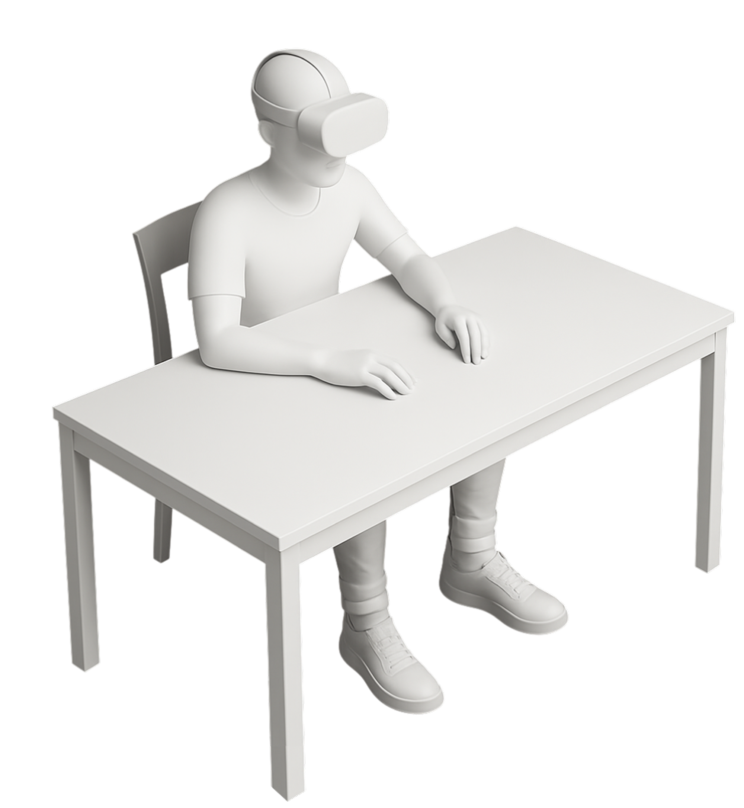
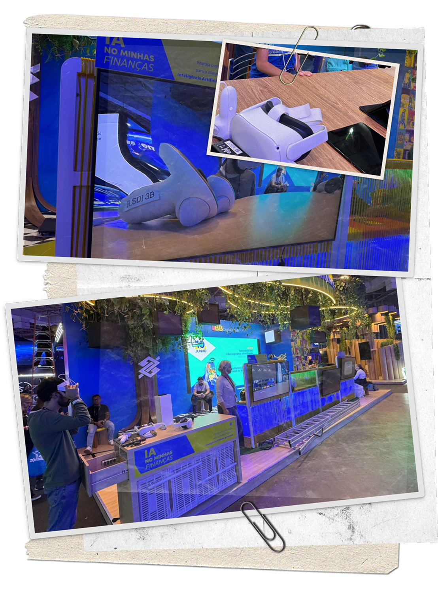
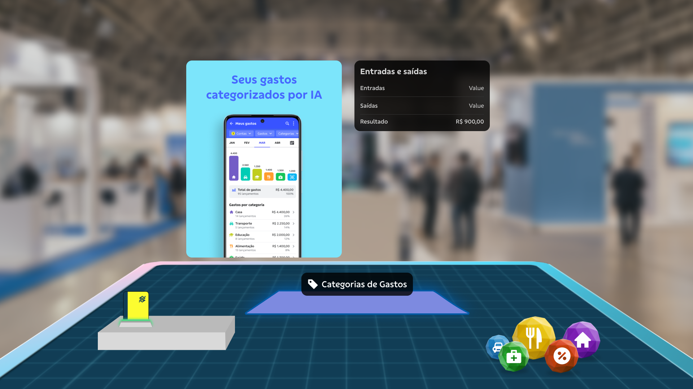
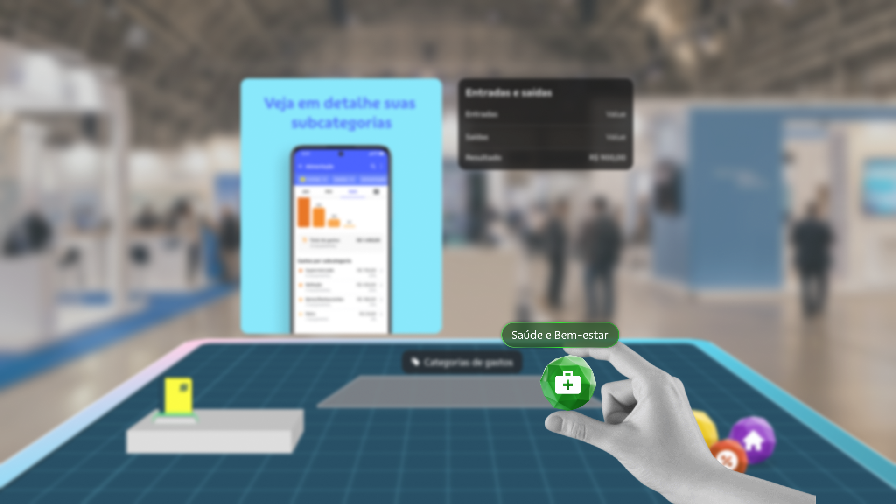
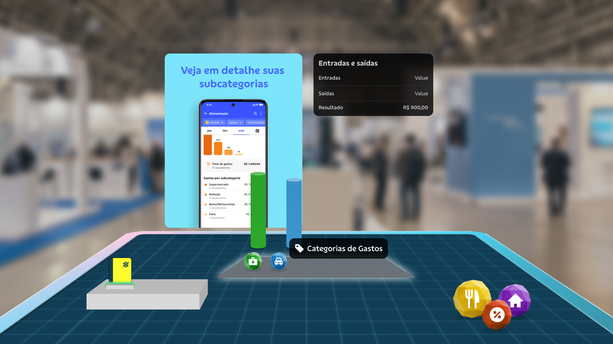
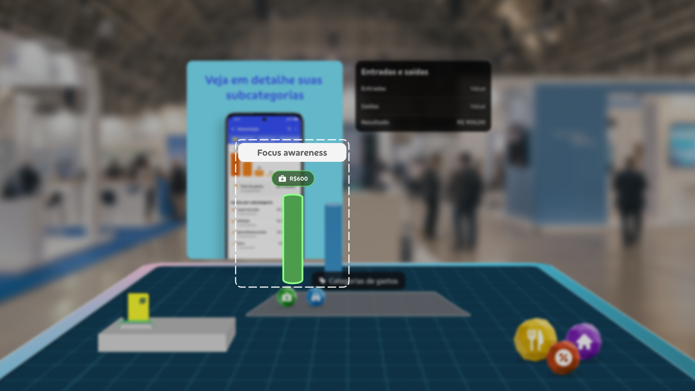
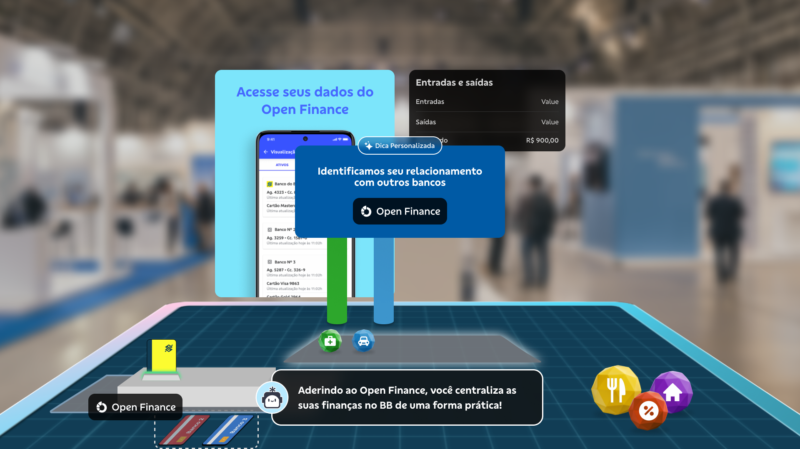
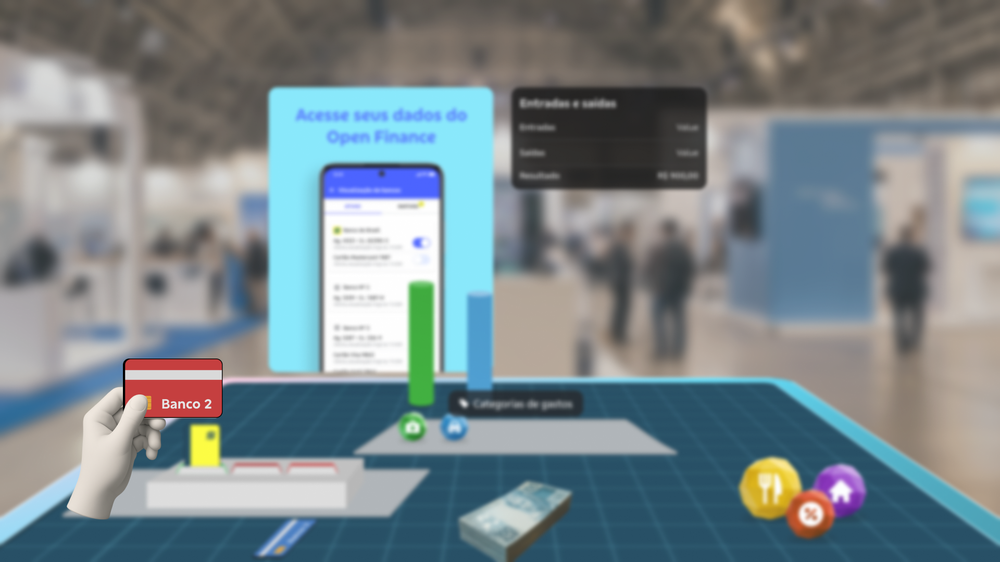

MINHAS
FINANÇAS XR
Projeto de realidade mista utilizando o Meta Quest 3 para apresentar e promover a funcionalidade “Minhas Finanças” do aplicativo BB por meio de uma experiência interativa e atrativa.


MINHA ATUAÇÃO
-
Diálogo direto com modeladores 3D e desenvolvedores
-
Elaboração de propostas da experiência por meio de protótipos.
-
Criação de fluxos e simulações para apresentação e validação.
-
Apresentação de proposta para stakeholders e ajustes de adequação da demanda





